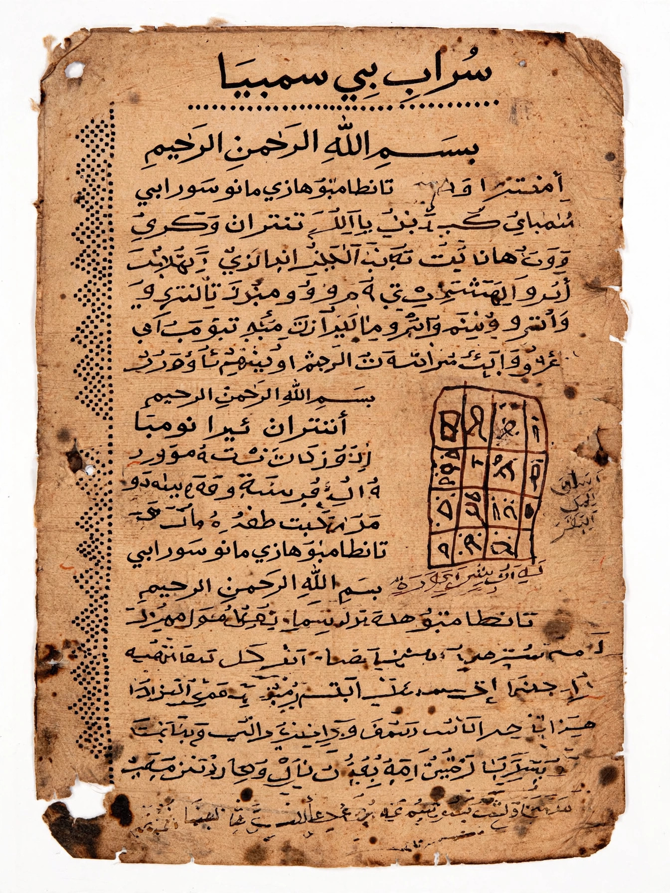

Malagasy language
| Malagasy | |
|---|---|
| Native to | Madagascar, Comoros |
| Speakers | Over 25 million |
| Family | Austronesian · Malayo-Polynesian · Barito |
| Official status | Official language of Madagascar |
Malagasy (Malagasy: Malagasy, pronounced [ˌmalaˈɡasʲ]) is an Austronesian language and the national language of Madagascar. It is the westernmost Austronesian language, a striking consequence of the seafaring migrations that settled Madagascar from Southeast Asia around 1,500 years ago.

1. Origins
2. Dialects
3. Writing system
4. Grammar
Origins
Malagasy descends from the South East Barito languages of southern Borneo, notably Ma'anyan. Its vocabulary shows this ancestry clearly, overlaid with loanwords from Bantu languages (reflecting African settlement), Arabic, and later French and English.
Dialects
The standard language is based on the Merina dialect of the central highlands around Antananarivo. Regional dialects differ in vocabulary and phonology but remain largely mutually intelligible.
Writing system
Before colonisation, Malagasy was written in sorabe, an Arabic-derived script used mainly for astrological and magical texts. The modern Latin alphabet was standardised in the 19th century during the reign of King Radama I, with help from the London Missionary Society.
Grammar
Malagasy is a verb–object–subject (VOS) language with a rich voice system that promotes different sentence constituents. Its unusual word order and Austronesian grammar make it a favourite case study in typology.
See also: Madagascar · Austronesian languages · London Missionary Society